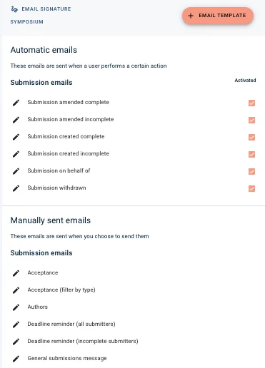
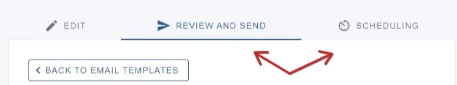
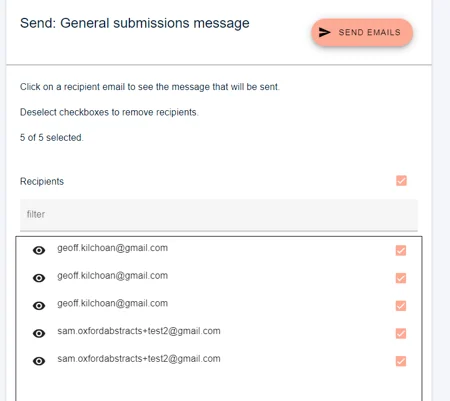
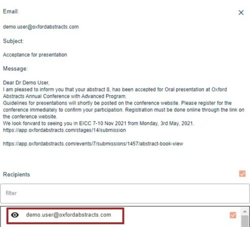
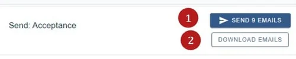
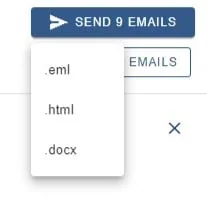
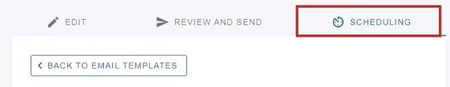
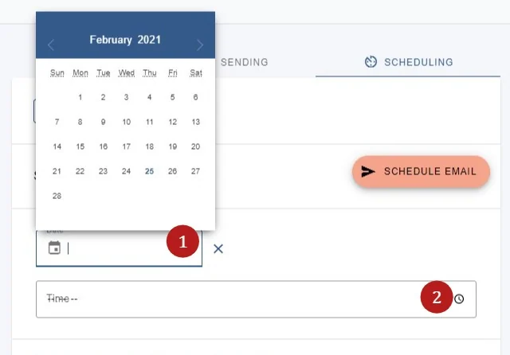
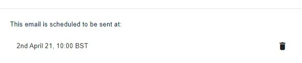

Sending and scheduling emails
For event organisersNot an organiser?
Once you have edited the template emails, or created your own custom ones, you can send or schedule your emails - send individually, in groups, or all at once.#
Go to Event dashboard → Emails → Edit and send → Abstract Management.
Skip to:
Each default email template set up for the event is listed. Those that are under the heading Automatic emails will be sent out automatically by the system, e.g. when a submission is created.
You can disable any of the automatic emails so that they do not send automatically by unticking the checkbox next to the relevant email template in the column headed with Activated.

To amend the text in any automatic or manual email, see Amending email templates.
Templates listed under the heading Manually sent emails will need to be sent manually.
Sending a manually sent email
There are two options for sending your email, either instantly, or by scheduling it to be sent at a later, set time.

Click Review and send if you would like to send the emails instantly.
You will see a list of recipients. All recipients are selected by default but you can untick the checkbox next to any email address you do not wish to send the email to.

To preview the email to a specific recipient, click on their email address.

You can send all the emails at the same time or select specific recipients, should you wish to send the emails out in batches.
You will be alerted to 1) how many emails you are sending.

2) You also have the option to download emails in the following formats, should you wish. (e.g. for sending via a different email client.)

Click SEND... EMAILS button to send the email to those selected.
Scheduling emails
Click on a specific email template on the list.
Click on the third tab - Scheduling

Choose 1) date and 2) time.
Then click Schedule email.

Your selection will appear at the bottom of the panel.
To remove the scheduled email - click on the bin icon.
Please note: The timezone for email scheduling cannot be changed.


Common questions#
I want to be informed when abstracts are submitted. How do I do this?#
You can CC and BCC emails to the event admin. See Amending template emails - Additional settings.
Did this page solve it?
Thanks — this helps us fix it.
Didn't solve it? Ask our support team
No question is too small, and there's no charge for asking. Raise a ticket and someone who knows the software will pick it up.